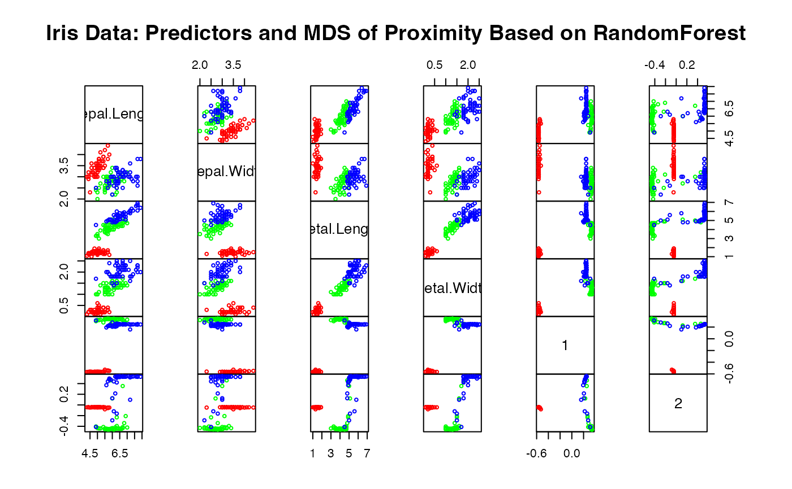
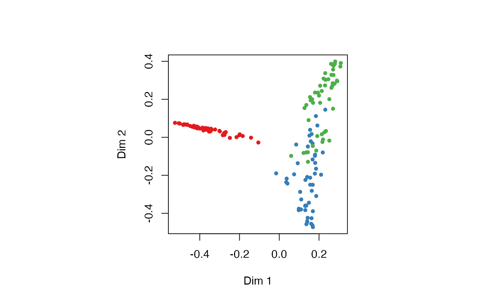

Classification and Regression with Random Forest
randomForest.RdrandomForest implements Breiman's random forest algorithm (based on
Breiman and Cutler's original Fortran code) for classification and
regression. It can also be used in unsupervised mode for assessing
proximities among data points.
Usage
# S3 method for formula
randomForest(formula, data=NULL, ..., subset, na.action=na.fail)
# S3 method for default
randomForest(x, y=NULL, xtest=NULL, ytest=NULL, ntree=500,
mtry=if (!is.null(y) && !is.factor(y))
max(floor(ncol(x)/3), 1) else floor(sqrt(ncol(x))),
weights=NULL,
replace=TRUE, classwt=NULL, cutoff, strata,
sampsize = if (replace) nrow(x) else ceiling(.632*nrow(x)),
nodesize = if (!is.null(y) && !is.factor(y)) 5 else 1,
maxnodes = NULL,
importance=FALSE, localImp=FALSE, nPerm=1,
proximity, oob.prox=proximity,
norm.votes=TRUE, do.trace=FALSE,
keep.forest=!is.null(y) && is.null(xtest), corr.bias=FALSE,
keep.inbag=FALSE, ...)
# S3 method for randomForest
print(x, ...)Arguments
- data
an optional data frame containing the variables in the model. By default the variables are taken from the environment which
randomForestis called from.- subset
an index vector indicating which rows should be used. (NOTE: If given, this argument must be named.)
- na.action
A function to specify the action to be taken if NAs are found. (NOTE: If given, this argument must be named.)
- x, formula
a data frame or a matrix of predictors, or a formula describing the model to be fitted (for the
printmethod, anrandomForestobject).- y
A response vector. If a factor, classification is assumed, otherwise regression is assumed. If omitted,
randomForestwill run in unsupervised mode.- xtest
a data frame or matrix (like
x) containing predictors for the test set.- ytest
response for the test set.
- ntree
Number of trees to grow. This should not be set to too small a number, to ensure that every input row gets predicted at least a few times.
- mtry
Number of variables randomly sampled as candidates at each split. Note that the default values are different for classification (sqrt(p) where p is number of variables in
x) and regression (p/3)- weights
A vector of length same as
ythat are positive weights used only in sampling data to grow each tree (not used in any other calculation)- replace
Should sampling of cases be done with or without replacement?
- classwt
Priors of the classes. Need not add up to one. Ignored for regression.
- cutoff
(Classification only) A vector of length equal to number of classes. The `winning' class for an observation is the one with the maximum ratio of proportion of votes to cutoff. Default is 1/k where k is the number of classes (i.e., majority vote wins).
- strata
A (factor) variable that is used for stratified sampling.
- sampsize
Size(s) of sample to draw. For classification, if sampsize is a vector of the length the number of strata, then sampling is stratified by strata, and the elements of sampsize indicate the numbers to be drawn from the strata.
- nodesize
Minimum size of terminal nodes. Setting this number larger causes smaller trees to be grown (and thus take less time). Note that the default values are different for classification (1) and regression (5).
- maxnodes
Maximum number of terminal nodes trees in the forest can have. If not given, trees are grown to the maximum possible (subject to limits by
nodesize). If set larger than maximum possible, a warning is issued.- importance
Should importance of predictors be assessed?
- localImp
Should casewise importance measure be computed? (Setting this to
TRUEwill overrideimportance.)- nPerm
Number of times the OOB data are permuted per tree for assessing variable importance. Number larger than 1 gives slightly more stable estimate, but not very effective. Currently only implemented for regression.
- proximity
Should proximity measure among the rows be calculated?
- oob.prox
Should proximity be calculated only on ``out-of-bag'' data?
- norm.votes
If
TRUE(default), the final result of votes are expressed as fractions. IfFALSE, raw vote counts are returned (useful for combining results from different runs). Ignored for regression.- do.trace
If set to
TRUE, give a more verbose output asrandomForestis run. If set to some integer, then running output is printed for everydo.tracetrees.- keep.forest
If set to
FALSE, the forest will not be retained in the output object. Ifxtestis given, defaults toFALSE.- corr.bias
perform bias correction for regression? Note: Experimental. Use at your own risk.
- keep.inbag
Should an
nbyntreematrix be returned that keeps track of which samples are ``in-bag'' in which trees (but not how many times, if sampling with replacement)- ...
optional parameters to be passed to the low level function
randomForest.default.
Value
An object of class randomForest, which is a list with the
following components:
- call
the original call to
randomForest- type
one of
regression,classification, orunsupervised.- predicted
the predicted values of the input data based on out-of-bag samples.
- importance
a matrix with
nclass+ 2 (for classification) or two (for regression) columns. For classification, the firstnclasscolumns are the class-specific measures computed as mean descrease in accuracy. Thenclass+ 1st column is the mean descrease in accuracy over all classes. The last column is the mean decrease in Gini index. For Regression, the first column is the mean decrease in accuracy and the second the mean decrease in MSE. Ifimportance=FALSE, the last measure is still returned as a vector.- importanceSD
The ``standard errors'' of the permutation-based importance measure. For classification, a
pbynclass + 1matrix corresponding to the firstnclass + 1columns of the importance matrix. For regression, a lengthpvector.- localImp
a p by n matrix containing the casewise importance measures, the [i,j] element of which is the importance of i-th variable on the j-th case.
NULLiflocalImp=FALSE.- ntree
number of trees grown.
- mtry
number of predictors sampled for spliting at each node.
- forest
(a list that contains the entire forest;
NULLifrandomForestis run in unsupervised mode or ifkeep.forest=FALSE.- err.rate
(classification only) vector error rates of the prediction on the input data, the i-th element being the (OOB) error rate for all trees up to the i-th.
- confusion
(classification only) the confusion matrix of the prediction (based on OOB data).
- votes
(classification only) a matrix with one row for each input data point and one column for each class, giving the fraction or number of (OOB) `votes' from the random forest.
- oob.times
number of times cases are `out-of-bag' (and thus used in computing OOB error estimate)
- proximity
if
proximity=TRUEwhenrandomForestis called, a matrix of proximity measures among the input (based on the frequency that pairs of data points are in the same terminal nodes).- mse
(regression only) vector of mean square errors: sum of squared residuals divided by
n.- rsq
(regression only) ``pseudo R-squared'': 1 -
mse/ Var(y).- test
if test set is given (through the
xtestor additionallyytestarguments), this component is a list which contains the correspondingpredicted,err.rate,confusion,votes(for classification) orpredicted,mseandrsq(for regression) for the test set. Ifproximity=TRUE, there is also a component,proximity, which contains the proximity among the test set as well as proximity between test and training data.
Note
The forest structure is slightly different between
classification and regression. For details on how the trees are
stored, see the help page for getTree.
If xtest is given, prediction of the test set is done ``in
place'' as the trees are grown. If ytest is also given, and
do.trace is set to some positive integer, then for every
do.trace trees, the test set error is printed. Results for the
test set is returned in the test component of the resulting
randomForest object. For classification, the votes
component (for training or test set data) contain the votes the cases
received for the classes. If norm.votes=TRUE, the fraction is
given, which can be taken as predicted probabilities for the classes.
For large data sets, especially those with large number of variables,
calling randomForest via the formula interface is not advised:
There may be too much overhead in handling the formula.
The ``local'' (or casewise) variable importance is computed as follows: For classification, it is the increase in percent of times a case is OOB and misclassified when the variable is permuted. For regression, it is the average increase in squared OOB residuals when the variable is permuted.
References
Breiman, L. (2001), Random Forests, Machine Learning 45(1), 5-32.
Breiman, L (2002), ``Manual On Setting Up, Using, And Understanding Random Forests V3.1'', https://www.stat.berkeley.edu/~breiman/Using_random_forests_V3.1.pdf.
Author
Andy Liaw andy_liaw@merck.com and Matthew Wiener matthew_wiener@merck.com, based on original Fortran code by Leo Breiman and Adele Cutler.
Examples
## Classification:
##data(iris)
set.seed(71)
iris.rf <- randomForest(Species ~ ., data=iris, importance=TRUE,
proximity=TRUE)
print(iris.rf)
#>
#> Call:
#> randomForest(formula = Species ~ ., data = iris, importance = TRUE, proximity = TRUE)
#> Type of random forest: classification
#> Number of trees: 500
#> No. of variables tried at each split: 2
#>
#> OOB estimate of error rate: 4.67%
#> Confusion matrix:
#> setosa versicolor virginica class.error
#> setosa 50 0 0 0.00
#> versicolor 0 47 3 0.06
#> virginica 0 4 46 0.08
## Look at variable importance:
round(importance(iris.rf), 2)
#> setosa versicolor virginica MeanDecreaseAccuracy MeanDecreaseGini
#> Sepal.Length 5.88 5.87 9.21 10.62 9.37
#> Sepal.Width 5.23 0.31 4.71 4.94 2.45
#> Petal.Length 21.60 31.41 27.71 32.39 42.13
#> Petal.Width 22.96 33.74 32.07 33.85 45.28
## Do MDS on 1 - proximity:
iris.mds <- cmdscale(1 - iris.rf$proximity, eig=TRUE)
op <- par(pty="s")
pairs(cbind(iris[,1:4], iris.mds$points), cex=0.6, gap=0,
col=c("red", "green", "blue")[as.numeric(iris$Species)],
main="Iris Data: Predictors and MDS of Proximity Based on RandomForest")

par(op)
print(iris.mds$GOF)
#> [1] 0.7373483 0.7989356
## The `unsupervised' case:
set.seed(17)
iris.urf <- randomForest(iris[, -5])
MDSplot(iris.urf, iris$Species)

## stratified sampling: draw 20, 30, and 20 of the species to grow each tree.
(iris.rf2 <- randomForest(iris[1:4], iris$Species,
sampsize=c(20, 30, 20)))
#>
#> Call:
#> randomForest(x = iris[1:4], y = iris$Species, sampsize = c(20, 30, 20))
#> Type of random forest: classification
#> Number of trees: 500
#> No. of variables tried at each split: 2
#>
#> OOB estimate of error rate: 4.67%
#> Confusion matrix:
#> setosa versicolor virginica class.error
#> setosa 50 0 0 0.00
#> versicolor 0 47 3 0.06
#> virginica 0 4 46 0.08
## Regression:
## data(airquality)
set.seed(131)
ozone.rf <- randomForest(Ozone ~ ., data=airquality, mtry=3,
importance=TRUE, na.action=na.omit)
print(ozone.rf)
#>
#> Call:
#> randomForest(formula = Ozone ~ ., data = airquality, mtry = 3, importance = TRUE, na.action = na.omit)
#> Type of random forest: regression
#> Number of trees: 500
#> No. of variables tried at each split: 3
#>
#> Mean of squared residuals: 302.2117
#> % Var explained: 72.46
## Show "importance" of variables: higher value mean more important:
round(importance(ozone.rf), 2)
#> %IncMSE IncNodePurity
#> Solar.R 9.76 10741.33
#> Wind 22.15 44234.96
#> Temp 43.85 53787.56
#> Month 2.59 1692.48
#> Day 0.93 6606.39
## "x" can be a matrix instead of a data frame:
set.seed(17)
x <- matrix(runif(5e2), 100)
y <- gl(2, 50)
(myrf <- randomForest(x, y))
#>
#> Call:
#> randomForest(x = x, y = y)
#> Type of random forest: classification
#> Number of trees: 500
#> No. of variables tried at each split: 2
#>
#> OOB estimate of error rate: 52%
#> Confusion matrix:
#> 1 2 class.error
#> 1 25 25 0.50
#> 2 27 23 0.54
(predict(myrf, x))
#> 1 2 3 4 5 6 7 8 9 10 11 12 13 14 15 16 17 18 19 20
#> 1 1 1 1 1 1 1 1 1 1 1 1 1 1 1 1 1 1 1 1
#> 21 22 23 24 25 26 27 28 29 30 31 32 33 34 35 36 37 38 39 40
#> 1 1 1 1 1 1 1 1 1 1 1 1 1 1 1 1 1 1 1 1
#> 41 42 43 44 45 46 47 48 49 50 51 52 53 54 55 56 57 58 59 60
#> 1 1 1 1 1 1 1 1 1 1 2 2 2 2 2 2 2 2 2 2
#> 61 62 63 64 65 66 67 68 69 70 71 72 73 74 75 76 77 78 79 80
#> 2 2 2 2 2 2 2 2 2 2 2 2 2 2 2 2 2 2 2 2
#> 81 82 83 84 85 86 87 88 89 90 91 92 93 94 95 96 97 98 99 100
#> 2 2 2 2 2 2 2 2 2 2 2 2 2 2 2 2 2 2 2 2
#> Levels: 1 2
## "complicated" formula:
(swiss.rf <- randomForest(sqrt(Fertility) ~ . - Catholic + I(Catholic < 50),
data=swiss))
#>
#> Call:
#> randomForest(formula = sqrt(Fertility) ~ . - Catholic + I(Catholic < 50), data = swiss)
#> Type of random forest: regression
#> Number of trees: 500
#> No. of variables tried at each split: 1
#>
#> Mean of squared residuals: 0.3277816
#> % Var explained: 44.34
(predict(swiss.rf, swiss))
#> Courtelary Delemont Franches-Mnt Moutier Neuveville Porrentruy
#> 8.541742 8.992064 9.124838 8.760460 8.541086 8.949770
#> Broye Glane Gruyere Sarine Veveyse Aigle
#> 8.933005 9.149158 8.908574 8.887482 9.117942 7.922911
#> Aubonne Avenches Cossonay Echallens Grandson Lausanne
#> 8.333468 8.221398 8.031662 8.306702 8.439164 7.720665
#> La Vallee Lavaux Morges Moudon Nyone Orbe
#> 7.571783 8.193442 7.984520 8.340828 7.854661 7.872754
#> Oron Payerne Paysd'enhaut Rolle Vevey Yverdon
#> 8.497338 8.503535 8.411120 8.035106 7.839470 8.330708
#> Conthey Entremont Herens Martigwy Monthey St Maurice
#> 8.834288 8.654145 8.757652 8.560958 8.882983 8.469376
#> Sierre Sion Boudry La Chauxdfnd Le Locle Neuchatel
#> 8.928218 8.635219 8.258310 8.028697 8.177889 7.779149
#> Val de Ruz ValdeTravers V. De Geneve Rive Droite Rive Gauche
#> 8.573018 8.155001 6.776675 7.527191 7.289894
## Test use of 32-level factor as a predictor:
set.seed(1)
x <- data.frame(x1=gl(53, 10), x2=runif(530), y=rnorm(530))
(rf1 <- randomForest(x[-3], x[[3]], ntree=10))
#>
#> Call:
#> randomForest(x = x[-3], y = x[[3]], ntree = 10)
#> Type of random forest: regression
#> Number of trees: 10
#> No. of variables tried at each split: 1
#>
#> Mean of squared residuals: 1.599315
#> % Var explained: -44.33
## Grow no more than 4 nodes per tree:
(treesize(randomForest(Species ~ ., data=iris, maxnodes=4, ntree=30)))
#> [1] 4 4 4 4 4 4 4 4 4 4 4 4 4 4 4 4 4 4 4 4 4 4 4 4 4 4 4 4 4 4
## test proximity in regression
iris.rrf <- randomForest(iris[-1], iris[[1]], ntree=101, proximity=TRUE, oob.prox=FALSE)
str(iris.rrf$proximity)
#> num [1:150, 1:150] 1 0.386 0.347 0.307 0.881 ...
#> - attr(*, "dimnames")=List of 2
#> ..$ : chr [1:150] "1" "2" "3" "4" ...
#> ..$ : chr [1:150] "1" "2" "3" "4" ...
## Using weights: make versicolors having 3 times larger weights
iris_wt <- ifelse( iris$Species == "versicolor", 3, 1 )
set.seed(15)
iris.wcrf <- randomForest(iris[-5], iris[[5]], weights=iris_wt, keep.inbag=TRUE)
print(rowSums(iris.wcrf$inbag))
#> 1 2 3 4 5 6 7 8 9 10 11 12 13 14 15 16 17 18 19 20
#> 321 316 314 322 320 266 302 296 275 294 294 280 286 312 307 291 285 296 292 316
#> 21 22 23 24 25 26 27 28 29 30 31 32 33 34 35 36 37 38 39 40
#> 312 286 287 258 310 289 271 287 300 319 286 311 289 296 292 294 291 305 281 293
#> 41 42 43 44 45 46 47 48 49 50 51 52 53 54 55 56 57 58 59 60
#> 296 294 305 270 340 300 282 311 283 301 888 912 905 874 921 908 899 954 925 933
#> 61 62 63 64 65 66 67 68 69 70 71 72 73 74 75 76 77 78 79 80
#> 927 906 927 927 941 901 881 934 913 917 910 885 869 904 957 861 878 896 908 936
#> 81 82 83 84 85 86 87 88 89 90 91 92 93 94 95 96 97 98 99 100
#> 871 902 879 883 926 905 906 835 890 895 915 902 877 918 974 905 900 889 884 910
#> 101 102 103 104 105 106 107 108 109 110 111 112 113 114 115 116 117 118 119 120
#> 301 306 287 319 323 278 277 288 315 286 303 277 284 295 312 325 267 312 298 333
#> 121 122 123 124 125 126 127 128 129 130 131 132 133 134 135 136 137 138 139 140
#> 308 300 306 303 311 301 303 301 287 308 284 296 309 260 291 325 281 272 281 287
#> 141 142 143 144 145 146 147 148 149 150
#> 305 318 295 328 307 274 341 276 304 265
set.seed(15)
iris.wrrf <- randomForest(iris[-1], iris[[1]], weights=iris_wt, keep.inbag=TRUE)
print(rowSums(iris.wrrf$inbag))
#> 1 2 3 4 5 6 7 8 9 10 11 12 13 14 15 16 17 18 19 20
#> 292 308 324 302 276 290 331 325 290 306 297 298 289 286 293 295 308 296 304 324
#> 21 22 23 24 25 26 27 28 29 30 31 32 33 34 35 36 37 38 39 40
#> 286 275 307 263 317 287 275 288 297 303 272 294 298 287 267 275 296 263 310 295
#> 41 42 43 44 45 46 47 48 49 50 51 52 53 54 55 56 57 58 59 60
#> 332 303 315 274 303 303 311 279 278 282 862 901 903 847 882 896 863 924 890 901
#> 61 62 63 64 65 66 67 68 69 70 71 72 73 74 75 76 77 78 79 80
#> 945 925 930 872 917 903 903 907 904 885 916 898 917 862 958 916 906 901 884 861
#> 81 82 83 84 85 86 87 88 89 90 91 92 93 94 95 96 97 98 99 100
#> 895 914 909 900 896 894 893 875 872 928 904 950 900 952 935 878 912 942 929 945
#> 101 102 103 104 105 106 107 108 109 110 111 112 113 114 115 116 117 118 119 120
#> 285 300 306 312 310 315 302 287 277 279 302 301 298 292 295 306 285 319 304 294
#> 121 122 123 124 125 126 127 128 129 130 131 132 133 134 135 136 137 138 139 140
#> 323 294 309 315 297 273 297 300 299 289 285 289 317 311 310 350 290 305 312 315
#> 141 142 143 144 145 146 147 148 149 150
#> 268 338 289 332 293 290 324 264 310 272